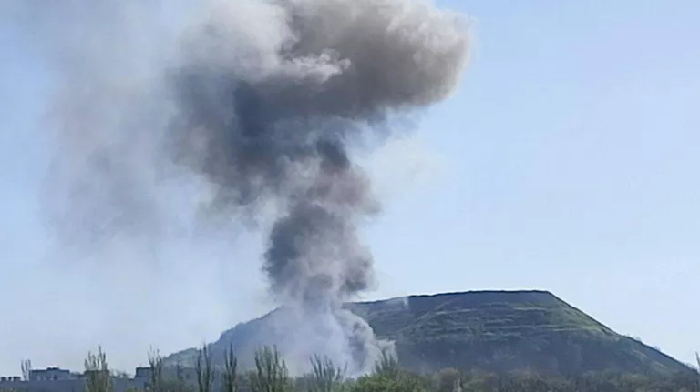

Минобороны рассказало о нарушениях пасхального перемирия со стороны ВСУ
В условиях продолжающегося конфликта на востоке Украины, объявленное пасхальное перемирие должно было стать моментом затишья и надежды на мир. Однако, как сообщает Министерство обороны Российской Федерации, украинские войска неоднократно нарушали режим прекращения огня после начала перемирия, объявленного президентом Владимиром Путиным с 18:00 19 апреля до 00:00 21 апреля 2025 года.
Согласно заявлению Минобороны, с 18:00 19 апреля все группировки войск в зоне специальной военной операции строго соблюдали режим прекращения огня и оставались на ранее занятых рубежах и позициях. В то же время, в течение ночи ВСУ применили 48 беспилотных летательных аппаратов, в том числе один — по территории Крыма. Также украинские войска 444 раза обстреляли из орудий и минометов позиции российских войск.
Кроме того, ВСУ ночью предприняли попытки атак позиций российских войск в районах населенных пунктов Сухая Балка и Богатырь в Донецкой Народной Республике, однако эти попытки были отражены. Российские войска сохранили контроль над ситуацией, не допустив продвижения противника.
Также отмечается, что в ночь на 20 апреля ВСУ осуществили 12 обстрелов, 33 удара беспилотниками и 7 сбросов боеприпасов на территории приграничных районов Брянской, Курской и Белгородской областей. Эти действия привели к жертвам и раненым среди гражданского населения, а также к повреждению гражданской инфраструктуры, включая жилые дома и объекты энергоснабжения.
Минобороны подчеркивает, что российская сторона продолжает соблюдать условия перемирия, несмотря на провокации, и призывает международное сообщество обратить внимание на нарушения со стороны Украины.